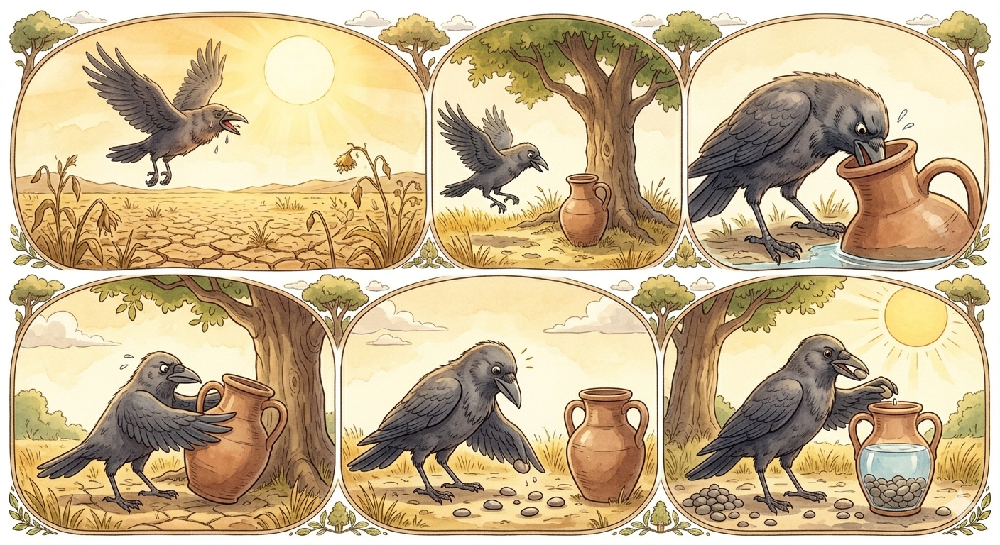

The Thirsty Crow

One hot day, a thirsty crow flew all over the fields looking for water. For a long time, he could not find any. He felt very weak, almost lost all hope. Suddenly, he saw a water jug below the tree. He flew straight down to see if there was any water inside. Yes, he could see some water inside the jug!
The crow tried to push his head into the jug. Sadly, he found that the neck of the jug was too narrow. Then he tried to push the jug to tilt for the water to flow out, but the jug was too heavy.
The crow thought hard for a while. Then, looking around, he saw some pebbles. He suddenly had a good idea. He started picking up the pebbles one by one, dropping each into the jug. As more and more pebbles filled the jug, the water level kept rising. Soon it was high enough for the crow to drink. His plan had worked!